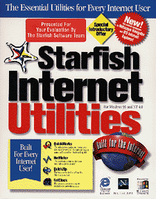

Starfish Internet Utilities
for Windows 95 and NT 4.0
Price: $19.95 (+ $6.95 S&H) online
 | (out of 5) |
One way to profit from the popularity of the Internet is to offer utilities that help simplify the surfing experience. Offer a user as many items as you can fit on a few floppies and you may just turn a profit.
 Starfish Software's Starfish Internet Utilities has joined the race. This two-floppy package is full of useful utilities. Unlike some other utilities packages, care has been taken to integrate all of the elements. Each utility can function as a stand-alone, but they can also be accessed as one of many elements on a control panel.
There are plenty of features offered, so everyone is guaranteed to find something useful. I was particularly taken with the Sending/Receiving Data indicator which was added to my taskbar. (Since we have a T1 hook-up, I don't have modem lights to tell me whether my connection is running or not.)
Here are the details on Starfish's other features with my commentary:
- QuickMarks: A bookmark filing system. QuickMarks lets you create categories of Web sites so that you can group similar sites together. It comes preset with tabs for search engines, "cool" sites, and your own bookmarks. It also allows you to set up tabs for frequently-used programs and for your desktop. I removed this utility from the control panel almost immediately since I was unable to customize the position of the individual QuickMarks on the page. Although many other aspects of the QuickMarks are customizable, I am very particular about aesthetics, and it didn't suit my needs in that regard. QuickMarks also checks up on your marked sites periodically.
- QuickZip: A file compression/extraction agent. If you don't already have a zipped file extractor, QuickZip seems to do a good job, although it is not as fully featured as the latest versions of PKUnzip or WinZip. However, QuickZip was the first ZIP utility with which I had success in creating zipped files. You are even given the option of creating self-extracting files.
- WinTools: Basically, WinTools is another place to add shortcuts to system functions. A button for shutdown or restart can be added to the interface, as well as shortcuts to areas such as Control Panel, Task Manager, and Windows Explorer. In reality, this feature can save you, at most, a mouse click or two.
- Virtual Screens: An interesting idea, VirtualScreens was designed to allow up to 9 distinct "desktops" to be running simultaneously. In theory, the user could run an application in the background all day, but by using a different virtual desktop, never have to see that application running. This appealed to me because I run image capture software all day. I was hoping that VirtualScreens would allow me to hide the multiple windows involved. To my chagrin, I found this utility to be extremely difficult to work with. The desktops would switch by themselves, and hidden or minimized windows would suddenly pop up. VirtualScreens was as frustrating as a misbehaving child. And like a child, there seems to be no off switch.
- InternetMeter: Using a dial-up with pay-by-the-minute access can be dangerous. It's easy to lose track of online time while chatting or downloading graphics-heavy files. InternetMeter should help to keep costs under control. A meter displays time connected, as well as graphically representing modem activity. This utility can also log all outgoing and incoming modem calls.
- InternetClock: For the "Net-Set" person with friends around the globe, or the corporate type, InternetClock helps to solve a small, but nagging, problem right on your own desktop. Up to four clock faces with independent time zones can be displayed. You can label your clocks however you like and adjust the appearance of each separately. Add to this the ability to program in reminders with alarms, and you have a nice little package. Too bad only four clocks are allowed.
- Resources: If you worry about disk space or RAM availability, the resource utility might interest you. Monitor memory and CPU usage, and keep a running tally of free hard disk space. Try as I might, I could never get the memory meter to fluctuate enough to be truly entertained.
Starfish has tried to deal with the problem of overcrowded monitor screens by offering multiple display options. Still, the control panel is cumbersome, even when using its auto-hide feature. Some degree of customization is possible with the control panel. Utilities can be added and removed easily, each individual interface has multiple size settings-- allowing you to decrease the size of the less important features. But I did find that the customization did not allow as much control as I would have liked. And in the utilities market, simplicity and elegance are often the most important features.
If you are interested in this software visit http://www.starfishsoftware.com.
| -- Troy Brophy |